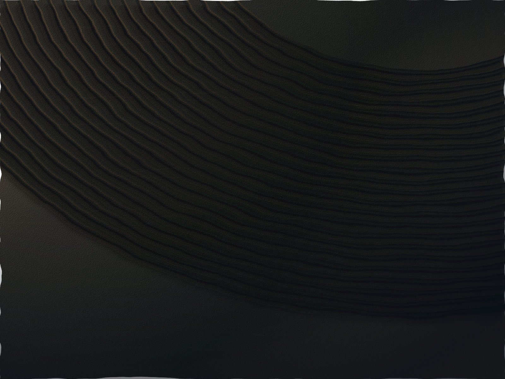
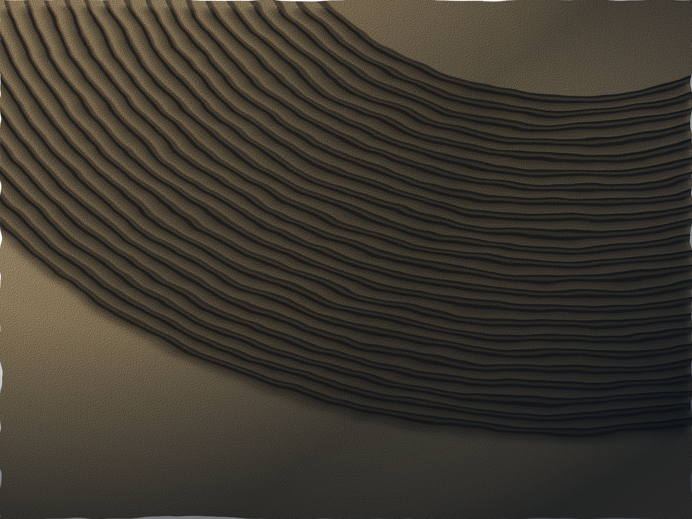

Math with
some weight to it.
Stone, metal, light.
Made from functions. Delivered as SVG.

01 / Basalt
Displaced contours. Rough mineral relief.


04 / Toroidal field
A projected parametric surface. A slow 24-second cycle.


05 / Limestone
SVG ↗Relief, not a flat fill.
Broad color variation, directional lighting, microscopic grain and shadows between layers. Every material is generated from a repeatable seed. No embedded photographs.
Read the method ↗